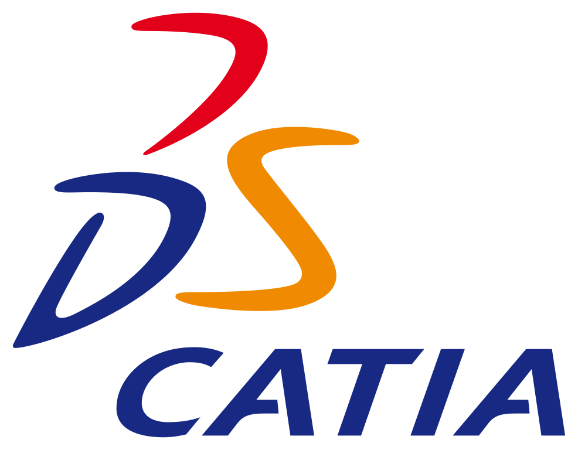
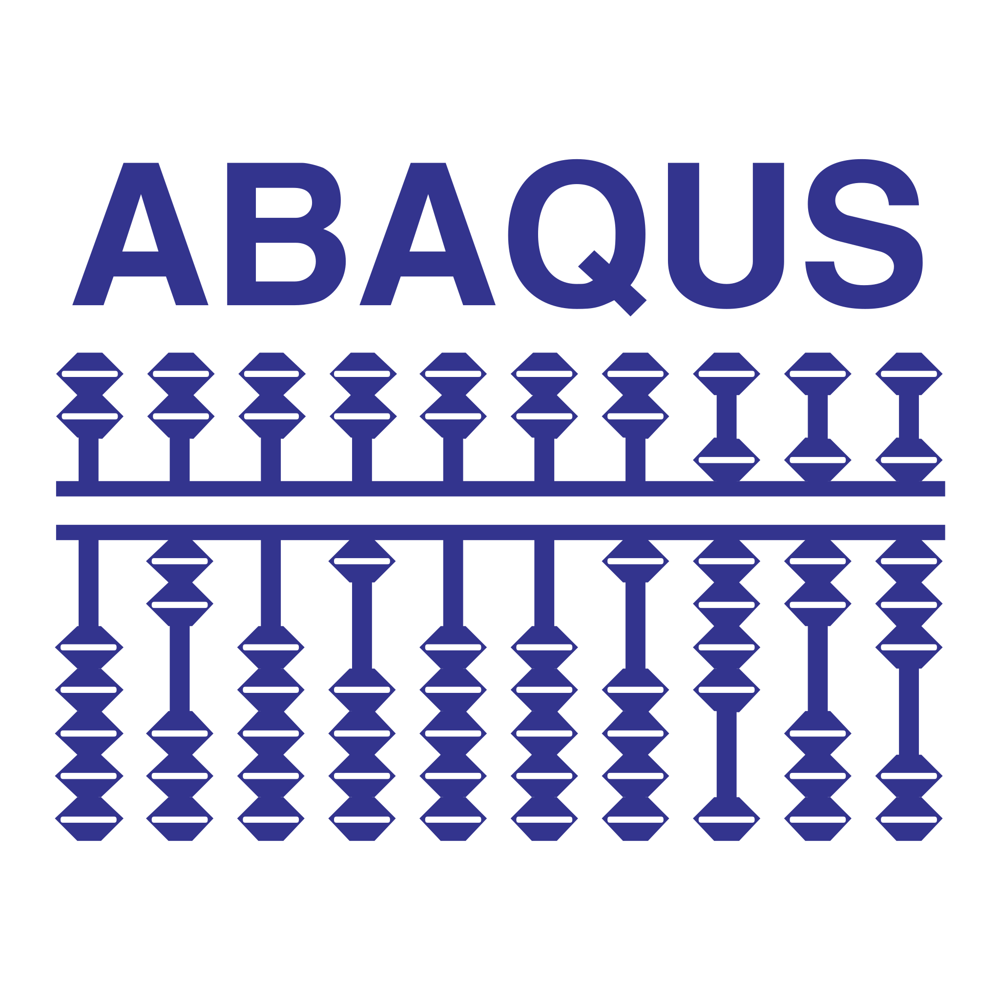
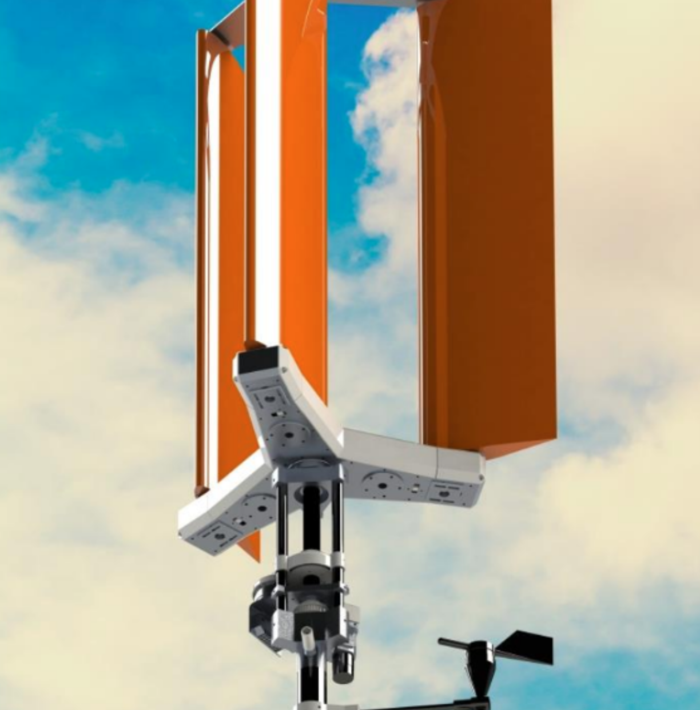
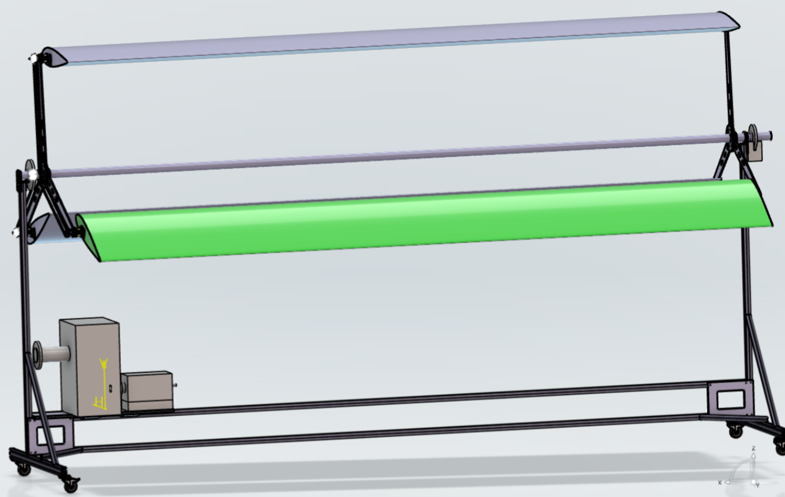
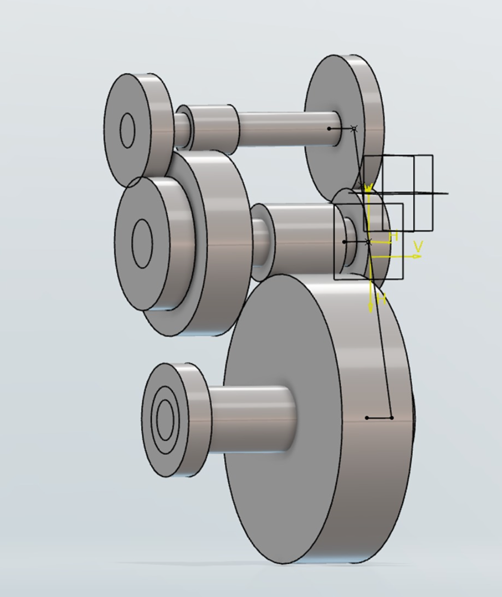
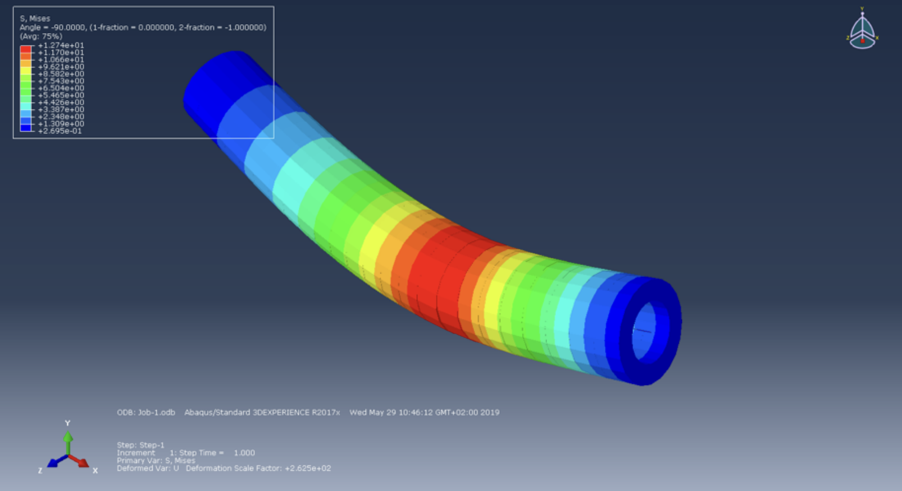

🌿 UrbanWind: Smart Micro-Wind Turbine Transmission System
Objective
Design a compact and realistic wind turbine transmission system adapted to urban environments, combining analytical sizing, numerical modelling, and structural verification.
Tools & Languages
-
 Python
Python
-

CATIA -

ABAQUS -
 MATLAB
MATLAB
The Project
- Application: compact horizontal-axis wind turbine designed for urban environments
- Rated power: target electrical output in the order of a few hundred watts
- Transmission layout: rotor → belt stage → gearbox → generator
- Design constraints: compactness, manufacturability, noise and vibration limits, addressed through analytical calculations and numerical tools

Milestone 1 – System Design & Pre-Dimensioning
- System architecture: definition of the full drivetrain and power flow from rotor to generator
- Operating range: wind speeds between ~3 and 12 m/s considered
- Pre-dimensioning: initial sizing of rotor, shafts and belt transmission using analytical models and Python-based calculations
- Power estimation: aerodynamic power evaluated with simplified CFD-based correlations

Milestone 2 – Modeling the Powertrain System
- Mechanical modelling: iterative sizing of gears and bearings under variable loads
- Fatigue criteria: bearing life targeted above 10⁷ load cycles
- Efficiency: cumulative transmission efficiency estimated above 90%
- CAD integration: full drivetrain assembled and checked for interferences using CATIA

Milestone 3 – Structural Verification & CAD Completion
- Structural simulation: Finite element analyses performed in Abaqus on the input, intermediate, and output shafts to assess stress, deformation and torsional behaviour under representative wind loads.
- Aerodynamic optimisation: Blade angle adjustments guided by CFD analyses improved energy conversion efficiency by approximately 20%.
- Structural reliability: Maximum stresses around 150 MPa and shaft deflections below 0.3 mm, ensuring sufficient stiffness.
- Design validation: Augmented reality visualisation used to evaluate compactness and urban integration.
- Model consistency: Numerical results within ~5% of analytical predictions.

Results
The final design was validated through combined analytical calculations and numerical simulations, demonstrating consistent mechanical behaviour across the full operating range.
- Global efficiency: transmission efficiency above 90% at nominal operating conditions
- Maximum stress: ~150 MPa on critical shafts, below the yield limit of 800MPa
- Maximum deflection: below 0.3 mm under peak loading
- Safety factors: greater than 1.5 on all structural components
- Model agreement: ~95% consistency between analytical calculations and FEM results